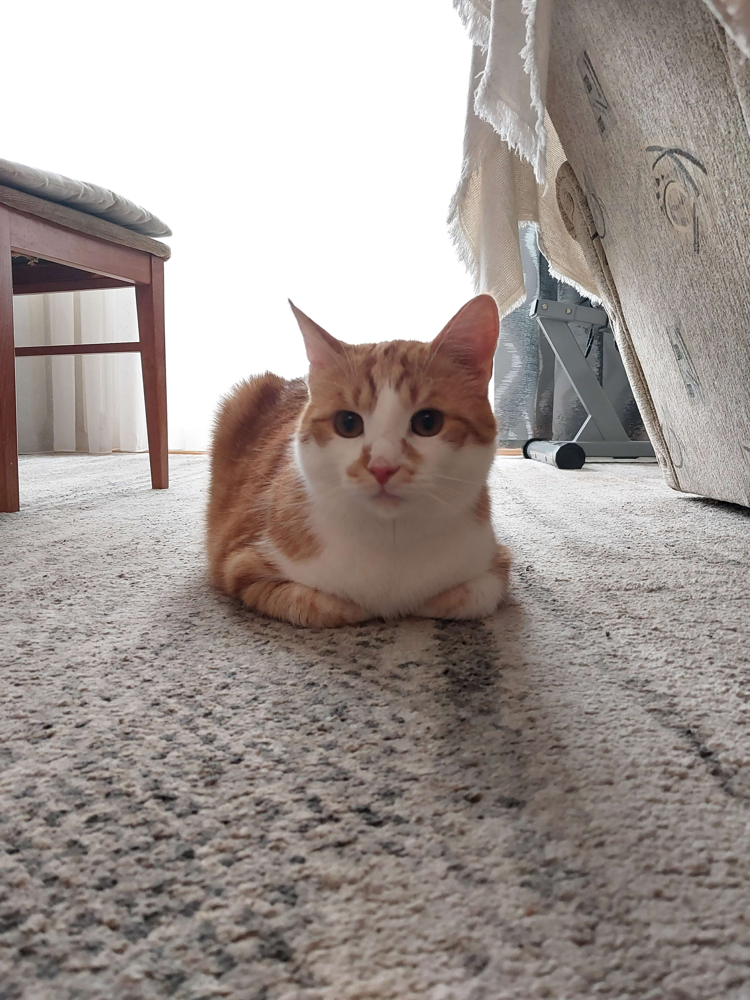
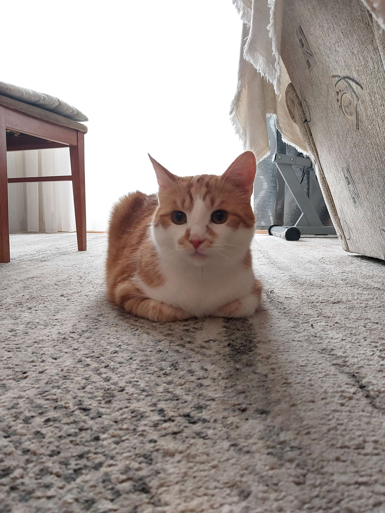
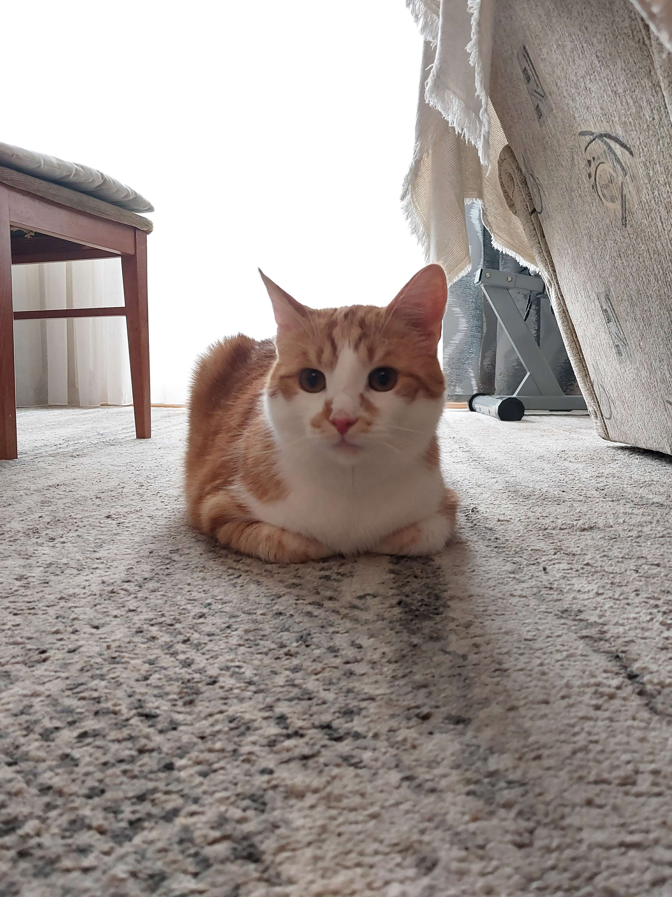

KOTY
| Grafika |
| Czat |

Kot domowy (Felis catus, również Felis silvestris catus) – udomowiony gatunek ssaka z rzędu drapieżnych z rodziny kotowatych. Koty zostały udomowione około 9500 lat temu i są obecnie najpopularniejszymi zwierzętami domowymi na świecie. Gatunek ten prawdopodobnie pochodzi od kota nubijskiego, przy czym w Europie krzyżował się ze żbikiem. Przez IUCN/SSC jest uznawany za gatunek inwazyjny.
Koty żyjące w środowisku naturalnym dożywają średnio do 8 lat, natomiast koty trzymane w domu osiągają wiek około 14-17 lat. Na długość życia wpływa szereg czynników, takich jak: płeć, styl życia czy zwyczaje, jak i również kwestia sterylizacji lub kastracji. Najdłużej żyjącym kotem według Księgi rekordów Guinnessa była kotka imieniem Creme Puff z Teksasu (1967–2005), która przeżyła 38 lat i 3 dni.